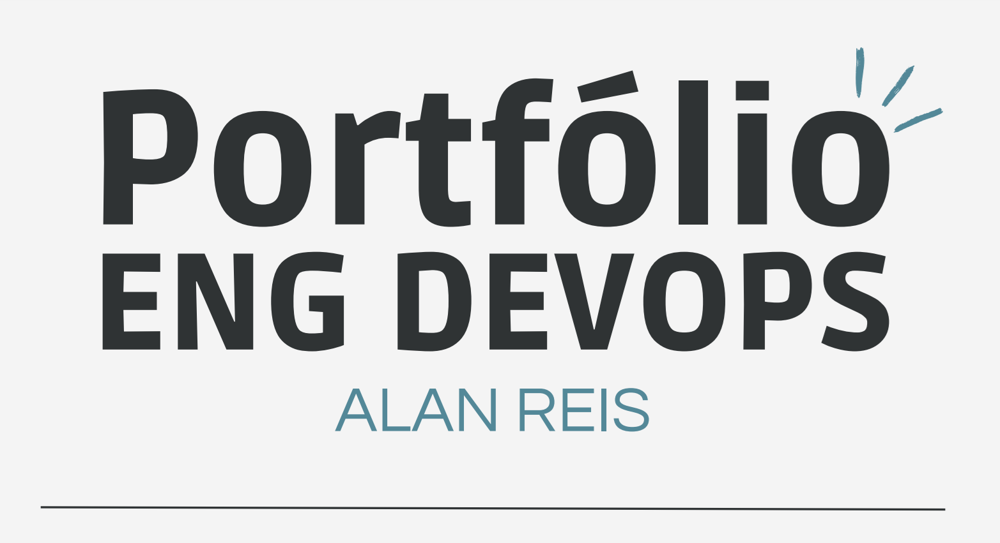
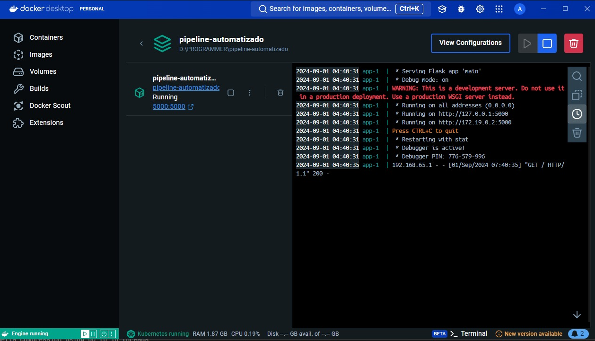

Sobre mim
Olá, sou Alan, DevOps Engineer com foco em automação e infraestrutura em nuvem (AWS e Azure). Estudo Engenharia de Software na Unicesumar e estou participando de um bootcamp da Microsoft Azure, além de ser aluno da Escola da Nuvem da AWS, onde me preparo para as certificações AWS Cloud Practitioner e Microsoft Azure.
Atualmente, sou estagiário na HZ Sistemas, onde estou desenvolvendo, em conjunto com a equipe, um sistema de gestão para óticas. Este sistema é confidencial, mas será utilizado para venda de assinaturas no modelo SaaS (Software as a Service). Minhas responsabilidades incluem a configuração e gerenciamento de ambientes Docker para desenvolvimento e produção, implementação de pipelines CI/CD com GitHub Actions e utilização de infraestrutura como código (IaC) com Terraform e Ansible para provisionamento e gerenciamento de servidores. Também faço o monitoramento de performance com Prometheus e Grafana e a gestão de banco de dados PostgreSQL.
Minha experiência abrange o desenvolvimento de pipelines automatizados, integração de ferramentas de monitoramento e aplicação de IaC, utilizando tecnologias como Docker, Kubernetes e Terraform, além de ferramentas de CI/CD como Jenkins e GitHub Actions.
Iniciei minha trajetória na área de tecnologia em 2023, com o desenvolvimento de jogos em Unity. Hoje, estou focado em DevOps e SRE, com ênfase em automação de infraestrutura e orquestração de containers. Sou proficiente em Python e Bash e aplico as melhores práticas de Cloud Computing para criar soluções escaláveis e seguras.
Projetos
Pipeline Automatizado com Docker
Voce Pode Conferir o codigo fonte do projeto em meu Github
Descrição: Este projeto demonstra a criação de uma aplicação web simples com Flask, acompanhada de um pipeline de automação para desenvolvimento e testes. A ideia principal é automatizar o processo de construção e testes da aplicação, utilizando Docker e GitHub Actions.
Tecnologias Utilizadas
O que Faz: A aplicação web foi desenvolvida com o framework Flask e é exibida em uma página estilizada e animada. Com o uso de Docker, a aplicação é empacotada em um container, o que facilita sua execução e gerenciamento. O pipeline automatizado, configurado com GitHub Actions, garante que o código seja testado e a imagem do Docker seja criada automaticamente sempre que há uma atualização no código.

Objetivo: O principal objetivo deste projeto é demonstrar a aplicação de práticas modernas de desenvolvimento e automação. Embora o deploy automático na AWS ainda não esteja implementado, o projeto já inclui um pipeline que prepara a aplicação para um futuro deploy em ambientes de produção.
Por que é Interessante: Este projeto é uma excelente vitrine para quem deseja ver como a automação pode ser utilizada para facilitar o desenvolvimento e garantir a qualidade do código. Ele mostra a integração de tecnologias como Flask para o desenvolvimento da aplicação, Docker para a containerização, e GitHub Actions para a automação do processo de build e testes.
CI/CD Pipeline para Aplicação Web com Deploy na AWS
Voce pode Conferir o codigo fonte do projeto em meu Github. Este projeto exemplifica a criação de um pipeline CI/CD robusto para uma aplicação web de previsão do tempo, construída com Flask e Docker. Utilizando a API do OpenWeatherMap, a aplicação é totalmente automatizada desde a construção até o deploy. O pipeline inclui integração com GitHub Actions para automação de build e testes, e usa Terraform e Ansible para a configuração e deploy automatizado na AWS. Este projeto visa demonstrar práticas avançadas de DevOps, como criação de imagens Docker, deploy contínuo e integração contínua, aplicando as melhores práticas para garantir uma entrega eficiente e segura.
Tecnologias Utilizadas
Deploy Automatico (Vagrant)
O que o projeto faz?
Voce Pode Conferir o codigo fonte do meu projeto em meu Github :
Este projeto demonstra a capacidade de criar e configurar um ambiente de desenvolvimento virtualizado e hospedar um site web. Aqui está uma visão geral do que ele faz:
Criação de uma Máquina Virtual: Utiliza o Vagrant para configurar uma máquina virtual. Isso cria um ambiente isolado e controlado onde você pode instalar e testar softwares sem interferir no sistema principal. Ideal para garantir que o ambiente de desenvolvimento seja consistente e reproduzível.
Clonagem de um Repositório do GitHub: O projeto clona um repositório do GitHub que contém o código de um site web. Isso permite integrar e trabalhar com o código do site diretamente na máquina virtual, facilitando o desenvolvimento e a atualização do site.
Configuração de um Servidor Web com Nginx: Após clonar o repositório, o projeto configura o Nginx na máquina virtual para servir o conteúdo do site. O Nginx é um servidor web de alto desempenho que gerencia o tráfego e exibe o site na máquina virtual, tornando-o acessível através de um navegador web.
Este projeto ilustra habilidades importantes em configuração de ambientes virtuais, gerenciamento de código e implantação de servidores web. Ele mostra a capacidade de preparar um ambiente de desenvolvimento completo e hospedar um site web de forma eficaz.
Tecnologias Utilizadas:
Habilidades
- AWS (Amazon Web Services) – Experiência em configuração, gerenciamento de instâncias EC2, S3, e RDS, além de integração com outros serviços de nuvem.
- Docker: Contêineres, Docker Compose – Criação e orquestração de contêineres, otimização de ambientes de desenvolvimento e produção.
- Kubernetes: Criação e gerenciamento de clusters, implementação de estratégias de escalabilidade horizontal e vertical para aplicações mission-critical, utilizando recursos como Deployments, Services, Ingresses e NetworkPolicies.
- CI/CD: Implementação de pipelines CI/CD robustos com Jenkins, GitLab CI e GitHub Actions, abrangendo desde a construção e testes até o deploy em diversos ambientes. Experiência em testes unitários, de integração e end-to-end, utilizando ferramentas como Jest e Selenium.
- IaC: Provisionamento e gerenciamento de infraestrutura com Terraform e Ansible, garantindo a reprodutibilidade e escalabilidade dos ambientes. Criação de módulos personalizados para automatizar tarefas repetitivas.
- Prometheus, Grafana – Configuração e customização de sistemas de monitoramento, dashboards, e alertas para garantir a disponibilidade e desempenho das aplicações.
- Redes: Conhecimento em redes TCP/IP, configuração de roteamento e firewalls, VPNs, e práticas de segurança em rede.
- Git Controle de Versionamento: Git GitHub GitLab– Uso avançado de versionamento de código, gerenciamento de branches, pull requests e integração com CI/CD.
- Github versionamento de código, Utilização de ferramentas do GitHub, como GitHub Actions para automatizar workflows
- GitLab Configuração de runners para executar pipelines em diferentes plataformas
-

- Python para a criação de scripts e automação
- JavaScript (desenvolvimento fullstack)
Certificações
- Certificação AWS Cloud Practitioner (em andamento, voucher garantido pela Escola da Nuvem)
- Microsoft Certified: Azure Fundamentals (Planejada, voucher garantido por bootcamp DIO)